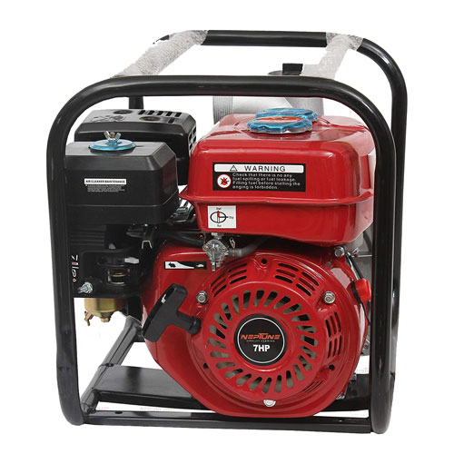
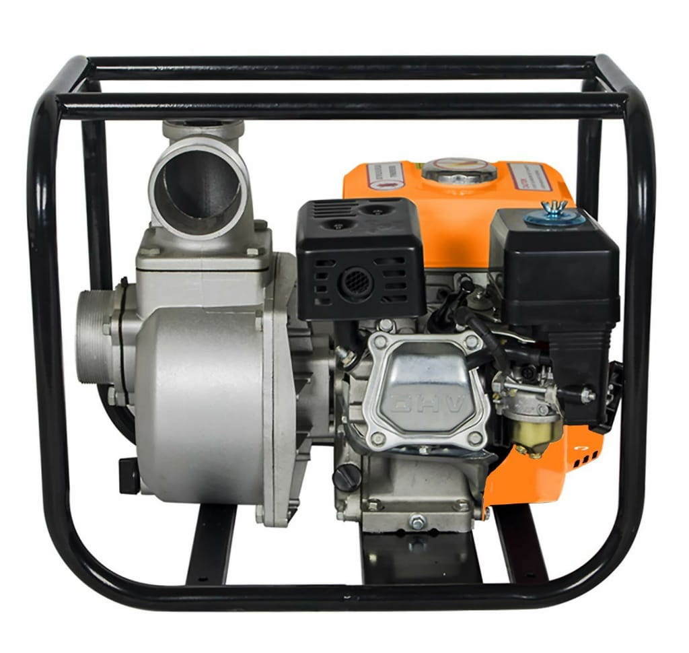
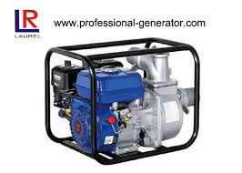

DIFFERENT STAGES OF FUEL PUMP
FUEL WATER PUMP RUNS FROM PETROL

- POWER [HP] : 1HP to 12HP (HP : Horse Power)
- ENGINE SPEED : 1000 rpm to 10000 rpm
- PETROL TANK CAPACITY : 0.65Ltr to 5.00Ltr
- No. Of Strokes : 3 to 5
- RUNNING CAPACITY : 4 Hrs to 6 Hrs
- WATER LIFTING CAPACITY : 6000 to 12000 Lts per Hrs
FUEL WATER PUMP RUNS FROM DIESEL

- POWER [HP] : 0.5HP to 16HP (HP : Horse Power)
- ENGINE SPEED : 800 rpm to 12500 rpm
- DIESEL TANK CAPACITY : 0.50Ltr to 6.0Ltr
- No. Of Strokes : 2 to 6
- RUNNING CAPACITY : 3 Hrs to 8 Hrs
- WATER LIFTING CAPACITY : 8000 to 14000 Lts per Hr
FUEL WATER PUMP RUNS FROM KEROSENE

- POWER [HP] : 1HP to 14HP (HP : Horse Power)
- KEROSENE TANK CAPACITY : 0.60Ltr to 6.0Ltr
- ENGINE SPEED : 1000 rpm to 8000 rpm
- No. Of Strokes : 2 to 6
- RUNNING CAPACITY : 3 Hrs to 8 Hrs
- WATER LIFTING CAPACITY : 7000 to 11500 Lts per Hrs